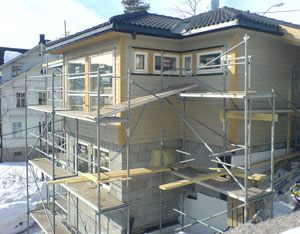

The U.S. Environmental Protection Agency (EPA) reported last week that nearly 17 percent of all single-family homes built in the United States in 2008 earned the Energy Star label, up from 12 percent in 2007.
Home builders and home buyers are continuing to invest in high-performing homes that save consumers money on their utility bills and help protect the environment. Market share for Energy Star-qualified homes was 20 percent or greater in 15 states in 2008, including Arizona, Colorado, Connecticut, Hawaii, Iowa, Kentucky, Nevada, New Hampshire, New Jersey, New York, Ohio, Oklahoma, Texas, Utah and Vermont.
To earn the Energy Star label, homes must meet strict guidelines for energy efficiency set by the EPA. Typically these include energy-saving features such as effective insulation, high-performance windows, airtight living spaces and ducts, efficient heating and cooling equipment, and Energy Star-qualified lights and appliances. See the list of features of Energy Star-qualified homes.
Nearly 940,000 Energy Star-qualified homes have been built to date, including more than 100,000 constructed in 2008. In 2008 alone, U.S. families living in Energy Star-qualified homes locked in annual utility bill savings of more than $250 million, avoiding the use of more than 1.5 billion kilowatt-hours of electricity and 155 million therms of natural gas. See a state-by-state breakdown of Energy Star-qualified homes.
The Energy Star program is a joint effort of the U.S. Department of Energy and the EPA.
|
 GEIRARNE/FLICKR More than 100,000 Energy Star-certified homes were built in the United States in 2008. The nation’s now 940,000 Energy Star-certified homes save more than $250 million on utility bills annually. |
|
|